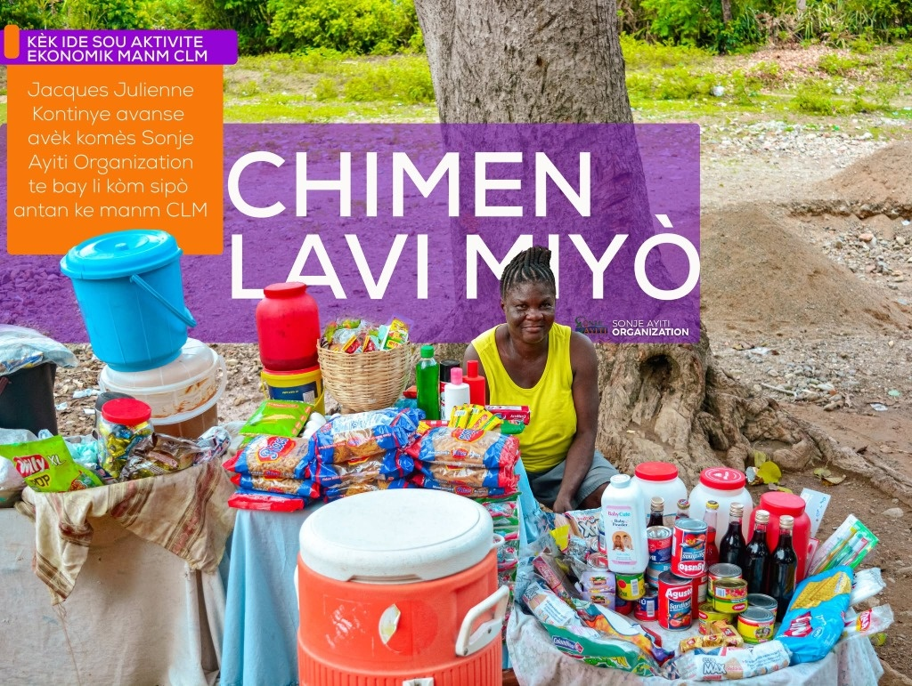
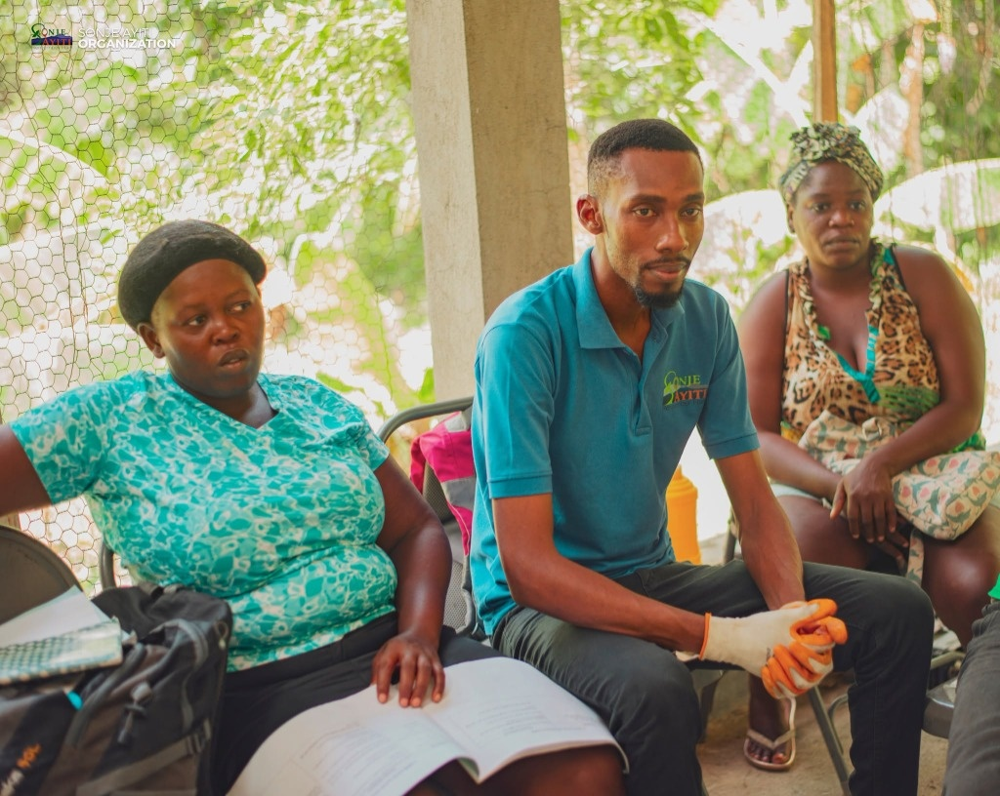
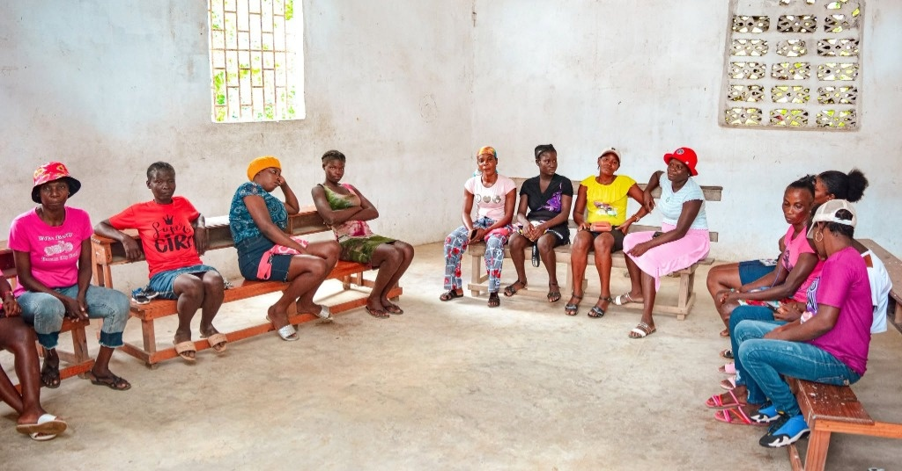

01
Éducation & Formation

Graduation de la cohorte CLM
Célébration officielle marquant la fin de formation et l’autonomie des femmes du programme Chimen lavi miyò.
10 avril 2026
SONJE AYITI EN RÉCITS
Les reportages de terrain, les avancées de nos programmes et les récits de nos communautés.
Découvrir l’album photo ↗
Célébration officielle marquant la fin de formation et l’autonomie des femmes du programme Chimen lavi miyò.

Apprentissage pratique de la fabrication de produits sanitaires pour renforcer la prévention dans les familles.

Grâce au micro-financement et à l’appui de Sonje Ayiti, Jacques Julienne développe son commerce de proximité.

L’équipe de terrain assure un dialogue permanent et un encadrement personnalisé auprès des communautés.

Les femmes des communautés se réunissent pour échanger, mutualiser les ressources et décider ensemble.
Élève studieuse à la Cima School of Hope, Ketia poursuit son apprentissage grâce au soutien de ses parrains.
Le parrainage offre la sécurité d’un suivi scolaire régulier et un environnement stimulant pour réussir.
Chaque soutien scolaire individuel participe au renforcement des compétences et à l’avenir d’Haïti.
Récits officiels et photographies documentaires de Sonje Ayiti.